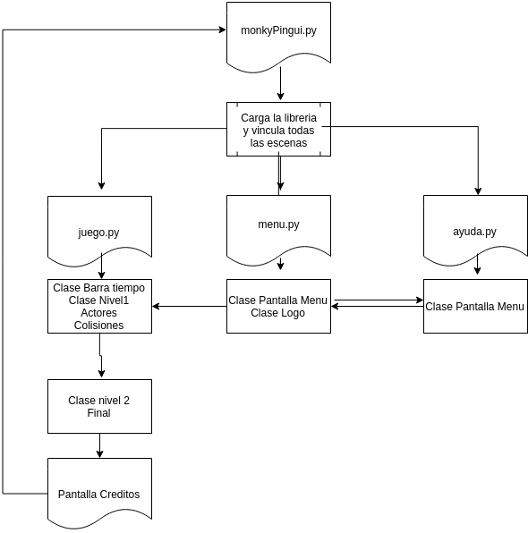
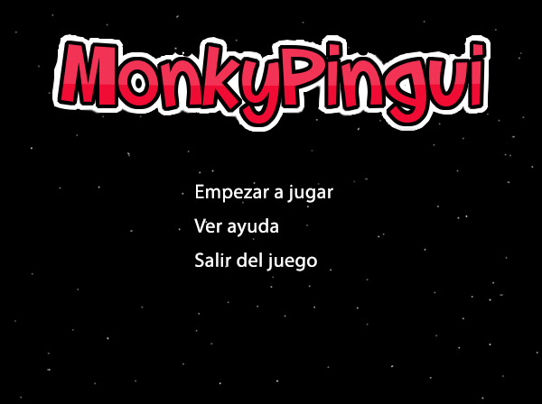
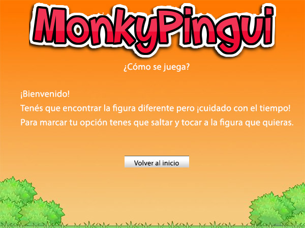
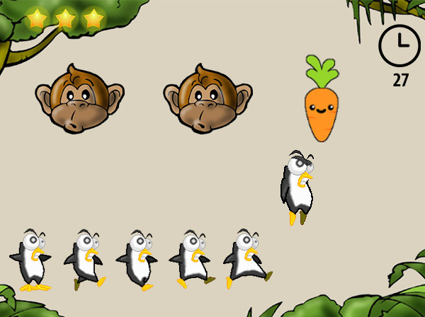

MonkyPingui es un mini video juego realizado por Eliana Rodriguez y Maria Alejandra Cuervo Miranda, cursando 1er año de Analisis de Sistemas.
Descripción general del juego
Este juego es un mix de plataforma y agilidad mental (ingenio), ya que el usuario tendrá el contról del personaje principal y con el deberá resolver 2 niveles de distinta dificultad.
En qué consiste
El usuario será el personaje "Pingui", y tendrá que indentificar la figura diferente de tres opciones dadas.
El nivel se acaba una vez pasado el tiempo dado, o cuando el usuario a pierde todas las veces.
Estructura a utilizar
El código estrá dividido en distintos módulos, siendo el archivo principal donde se ejecutan las llamadas necesarias e importaciones el llamado monkyPingui.py.
Luego, el juego se divide en cuatro grandes módulos: menu.py, ayuda.py, juego.py y resultados.py.
Planeamiento del juego
En primer lugar el usuario se encuentra con la pantalla inicial, la cual contiene el logo del juego, un menú con tres opciones: Empezar a jugar, ver ayuda y salir del juego.
La pantalla de ayuda contiene las indicaciones del juego y un botón para volver a la pantalla anterior
La siguiente escena ya muestra el juego en sí, aparecen tres figuras de las cuales dos son Monky, el mono, y una tercera que puede variar de personaje (tortuga, zanahoria o aceituna). Pingui es manejado por el usuario y podrá moverse con las flechas del teclado, hacia la izquierda y derecha y saltar. Esta colisión será la que marca la opción elegida.
El siguiente nivel consta de la misma cantidad de figuras pero con menos tiempo.
Finalmente cuando se termina el juego, lleva a la pantalla de resultado final, donde se comunica el puntaje final obtenido y se permite el ingreso de texto al usuario para que ponga su nombre.
Una vez ingresado y habiendo pulsado "ver ranking" se presenta la pantalla de ranking final, que lista las 10 mejores jugadas de la ejecución actual del programa, es decir que se eliminan los datos cuando se cierra el mismo.
El Ranking se ordena de manera descendente según el puntaje, luego por las vidas restantes y finalmente por órden alfabetico. Así de sacar el mismo puntaje decide la posición por la cantidad de vidas y si estas son iguales lo hace por el nombre.